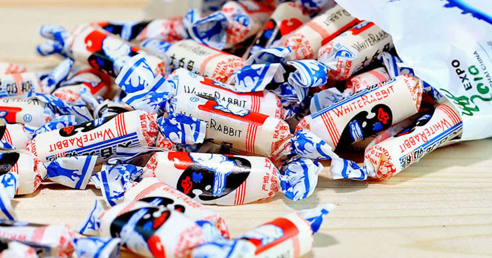
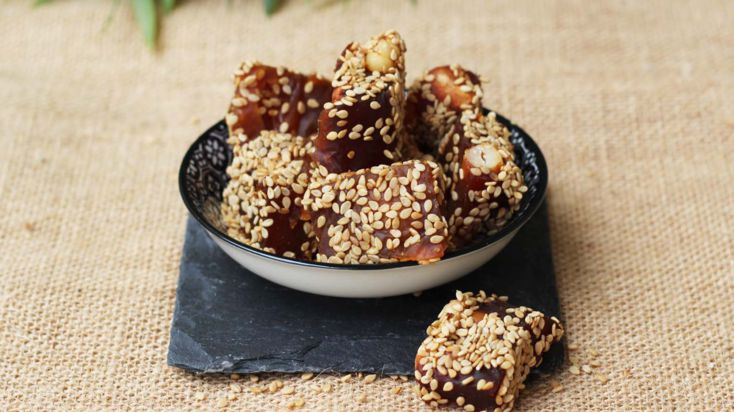
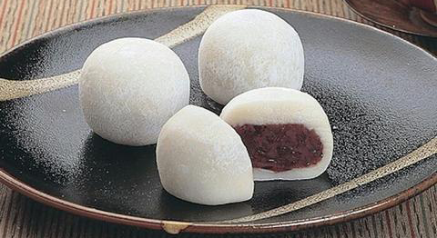
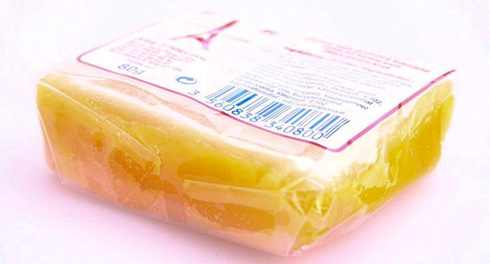

Ces 5 douceurs sucrées incontournables à retrouver dans tous les supermarchés asiatiques
Envie d'évasion pour vos papilles mais vous ne savez pas par où commencer ? Vous êtes au bon endroit ! Nous avons regroupé pour vous 5 incontournables que vous pourrez retrouver dans quasiment tous les supermarchés spécialisés dans la vente de produits alimentaires venus d'Asie.
1. Bonbons White Rabbit

Les bonbons White Rabbit sont un must-eat parmi les douceurs asiatiques de notre enfance. Ayant personnellement vécu la mienne en Île-de-France, je peux vous assurer que l'on se battait dans la cour de récréation pour en avoir. Facilement reconnaissables, les bonbons White Rabbit sont présents notamment à Paris Store, un géant de l'alimentaire asiatique. Avec son doux goût à la bouche, sucré mais pas à l'excès, ce bonbon en gélatine ravira vos papilles.
2. Nougats au sésame

Vous avez sûrement déjà eu affaire à ce délice si vous avez déjà mis le pied dans un restaurant asiatique. Malgré son nom, le nougat au sésame n'a que peu à voir avec le nougat européen. Avec son exotique saveur de banane, le nougat au sésame a su conquérir aussi bien jeunes enfants qu'adultes. Attention cependant à son côté extra-collant !
3. Mochi au haricot rouge

Impossible de passer à côté du fameux mochi au haricot rouge. Cette douceur venue du Japon n'a pas fini de combler ses dégustateurs. Moelleux à l'extérieur et fondant à l'intérieur avec sa garniture au haricot rouge, cette pâtisserie se mange à peine en deux bouchées. À vous de voir si vous en reprendrez !
4. Gâteau de la Lune

Avec la fameuse fête de la Lune vient les fameux gâteaux de la Lune. Disponibles dans une multitude de variations, sucrées ou salées, il est impératif d'en avoir goûté au moins une fois dans sa vie. Son coût cependant plutôt élevé pourra peut-être vous faire hésiter.
5. Délice de soja

Le délice de soja, originaire de la pâtisserie de Choisy, se décline sous plusieurs saveurs. À la banane ou au pandan, avec son coût raisonnable, cette pâtisserie incontournable vous emmènera pour un voyage gustatif en Asie du Sud-Est.